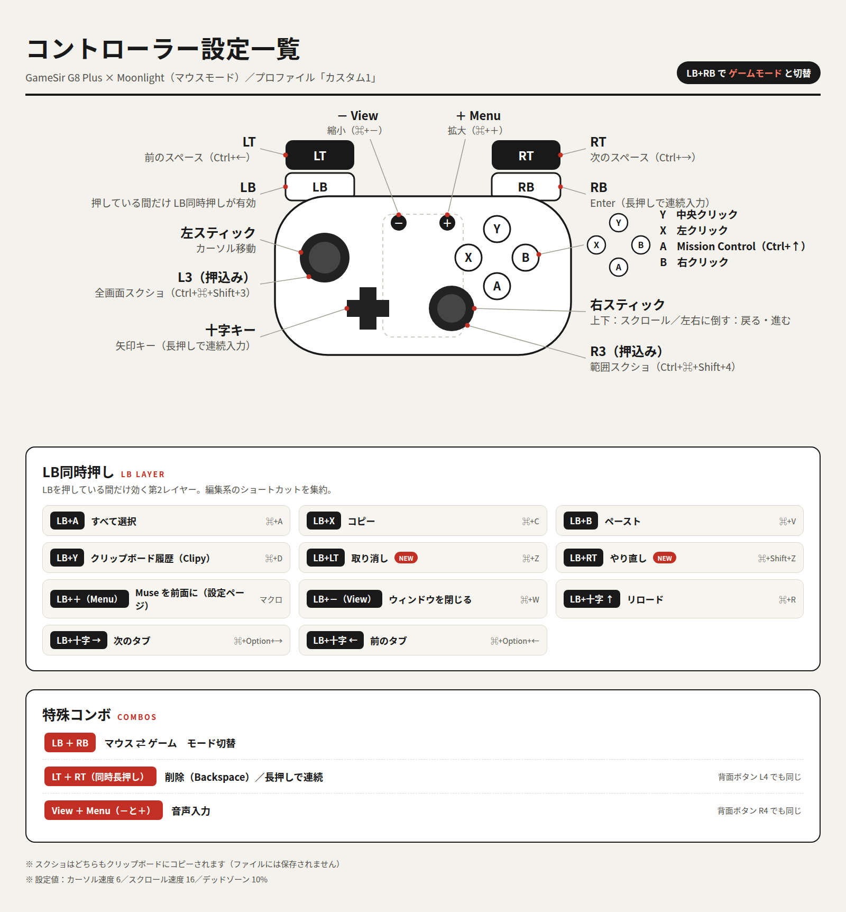
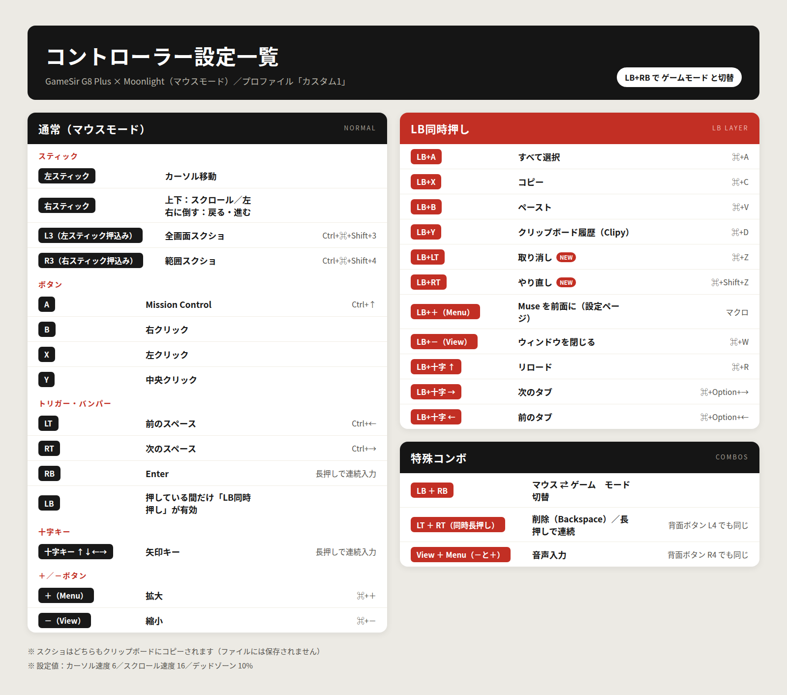
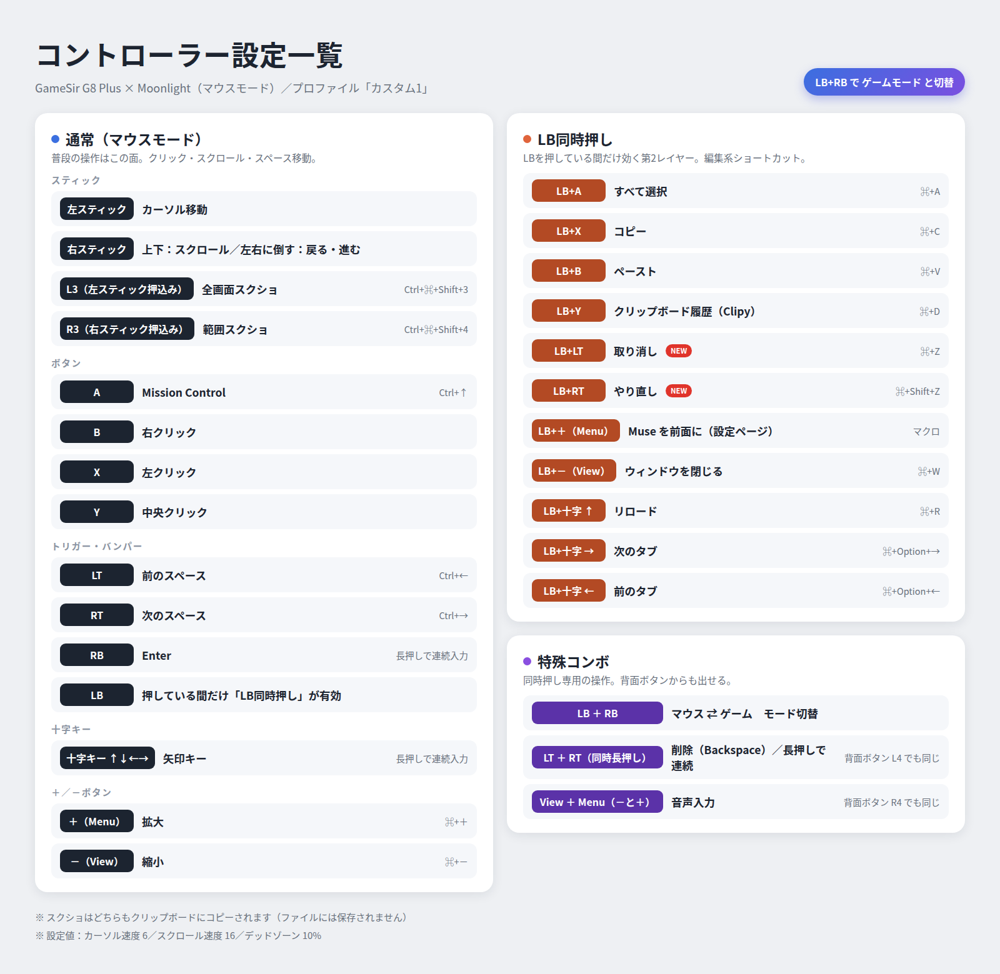
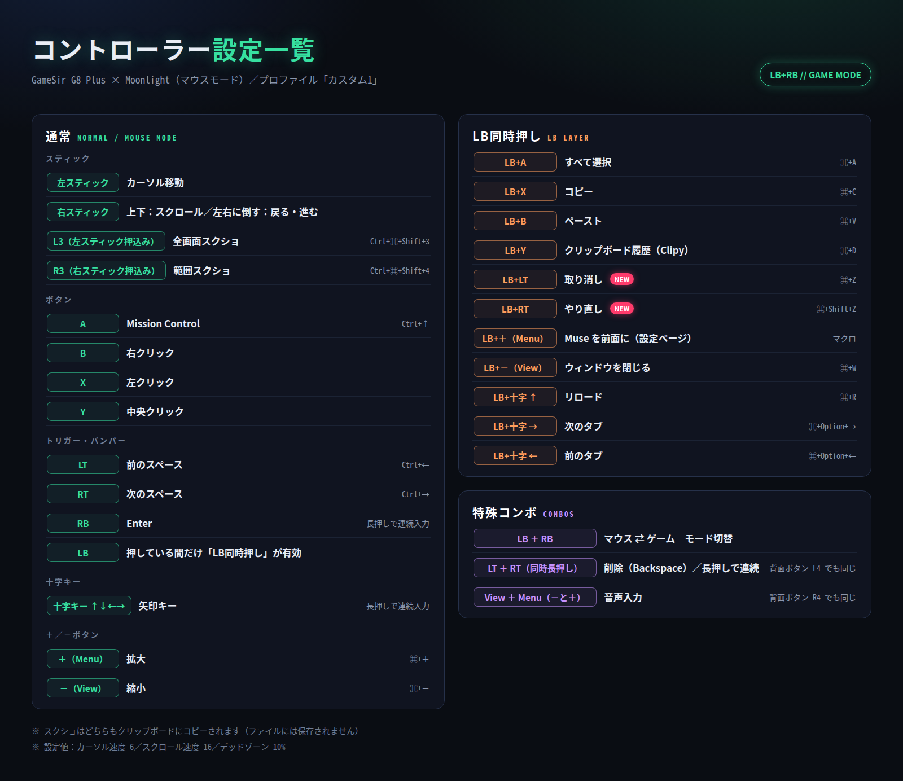
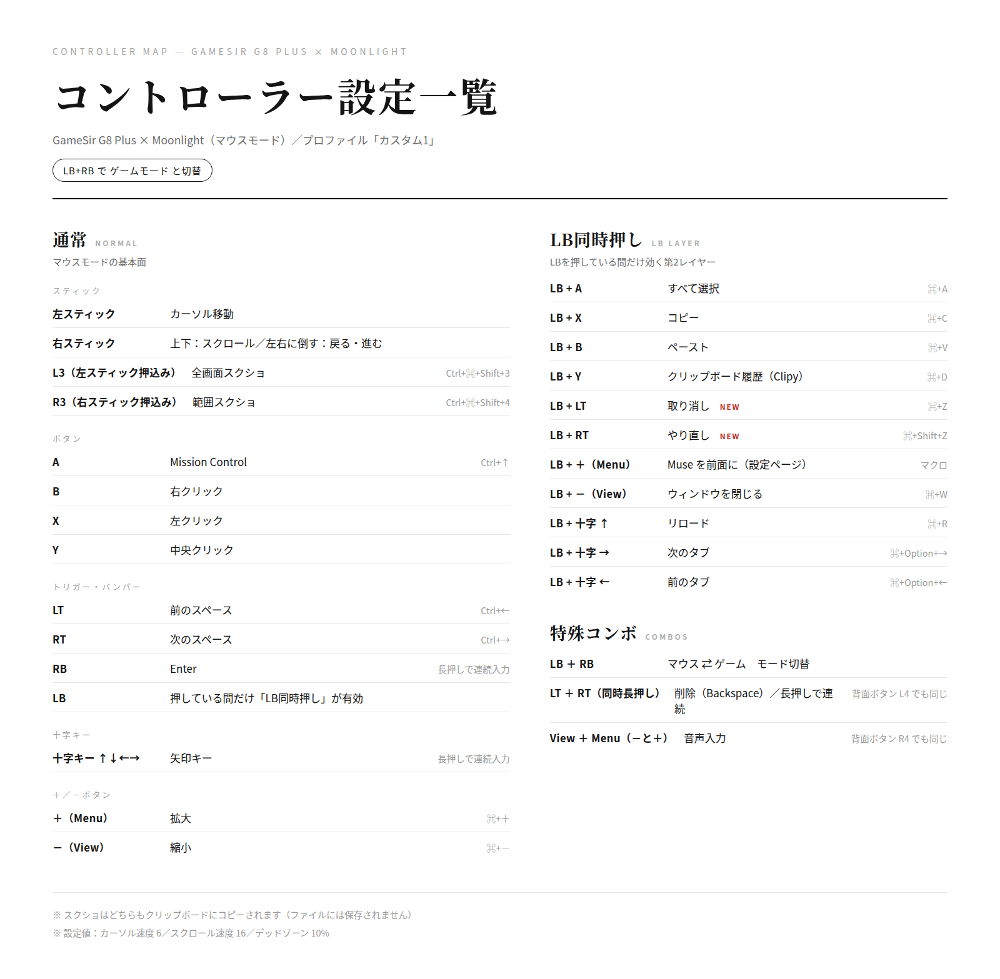

コントローラー設定一覧 5案
GameSir G8 Plus × Moonlight フォーク（マウスモード）の現行の割り当てぜんぶを1枚の画像にまとめるためのデザイン案。中身は全案まったく同じで、実機プロファイル「カスタム1」とコンバータの実装コードから正確に抜いたもの。本日追加した LB+LT＝取り消し（⌘+Z）／LB+RT＝やり直し（⌘+Shift+Z）も入っている。区分は「通常（マウスモード）」「LB同時押し」「特殊コンボ」の3つ。
選ばれた案が、そのまま実際の一覧画像になり、次に LB+＋ボタン へ割り当てる。画像はすべて横1600pxの実寸レンダリング。
1コントローラー図解型1600×1724px

パッドの絵から引き出し線で各ボタンの動作へつないだ図解。「押す場所」と「起きること」が直結して分かるので、最初に覚える1枚として一番強い。下半分はLB同時押しと特殊コンボを帯で整理。
→ 画像を実寸で開く
2早見表型1600×1413px

黒帯ヘッダー＋表3枚の実用一辺倒の早見表。装飾を捨てて文字の密度で勝負するので、目的のボタンを一番速く探せる。5案でいちばんコンパクト（縦が最短クラス）。
→ 画像を実寸で開く
3カード型1600×1559px

ボタンごとにタイルを並べた今風のカードUI。レイヤーごとにドットとボタンの色を変えて区別した。画面でパッと見たときの分かりやすさと、アプリっぽい親しみやすさのバランス型。
→ 画像を実寸で開く
4ダーク・ゲーミング型1600×1384px

暗い背景にネオンの枠線で組んだゲーミング機材風。レイヤーごとにネオン色（緑／オレンジ／紫）を割り当てた。縦は5案で最短。暗い画面で開いても眩しくない。
→ 画像を実寸で開く
5ミニマル・タイポ型1600×1567px

白地に明朝の大見出しと細い罫線だけの編集デザイン型。色も装飾もほぼ無しで、余白と文字の強弱だけで読ませる。印刷して貼ってもきれいな1枚。
→ 画像を実寸で開く